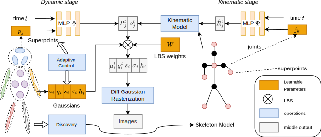

Template-free Articulated Gaussian Splatting for Real-time Reposable Dynamic View Synthesis
NuerIPS 2024
Diwen Wan1, Yuxiang Wang1, Ruijie Lu1, Gang Zeng1,
1 National Key Laboratory of General Artificial Intelligence, School of IST, Peking University, China
Abstract
While novel view synthesis for dynamic scenes has made significant progress, capturing skeleton models of objects and re-posing them remains a challenging task. To tackle this problem, in this paper, we propose a novel approach to automatically discover the associated skeleton model for dynamic objects from videos without the need for object-specific templates. Our approach utilizes 3D Gaussian Splatting and superpoints to reconstruct dynamic objects. Treating superpoints as rigid parts, we can discover the underlying skeleton model through intuitive cues and optimize it using the kinematic model. Besides, an adaptive control strategy is applied to avoid the emergence of redundant superpoints. Extensive experiments demonstrate the effectiveness and efficiency of our method in obtaining re-posable 3D objects. Not only can our approach achieve excellent visual fidelity, but it also allows for the real-time rendering of high-resolution images.
Method
The pipeline of proposed approach. Our approach follows a two-stage training strategy. In the first stage (i.e., dynamic stage), we learn the 3D Gaussians and superpoints to reconstruct the appearance. Each superpoint is associated with a rigid part, and the adaptive control strategy is used to control the count. After finishing the training of dynamic stage, we can discover the skeleton model based on superpoints. After we finish the second stage (i.e., kinematic stage), we can obtain an articulated model based on the kinematic model.
@InProceedings{SK-GS, title = {Template-free Articulated Gaussian Splatting for Real-time Reposable Dynamic View Synthesis}, author = {Wan, Diwen and Wang, Yuxiang and Lu, Ruijie and Zeng, Gang}, booktitle = {NeurIPS}, year = {2024}, }